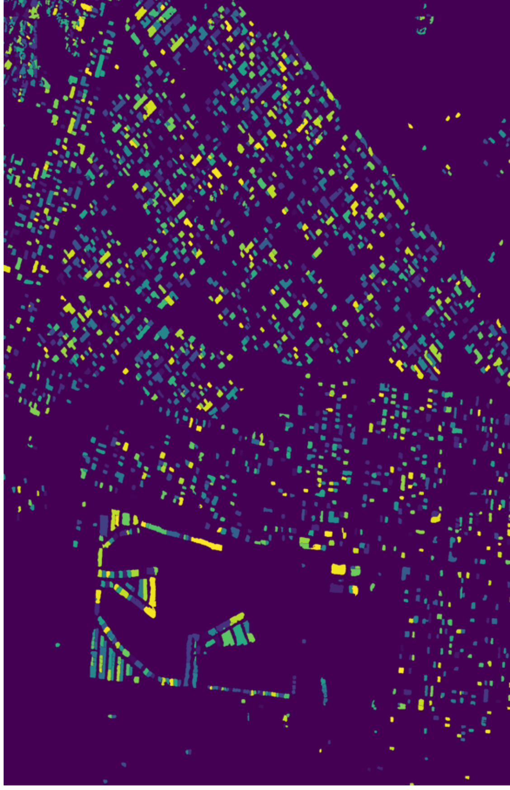
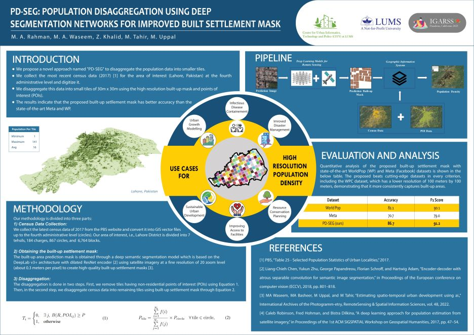
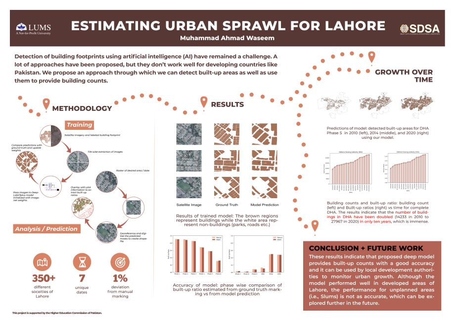

§ 03 / Work
Projects,
not portfolios.
Nine projects across speech AI, GPU systems, computer vision, and production geospatial work. Each one with real users, real metrics, or a real paper behind it. Click any tile for the detailed case study.
/01
Featured · Thesis
AutoPhon — a 10× faster pipeline for children's speech.
Phoneme-level annotation pipeline powered by Wav2Vec 2.0 + Whisper. Trained on CSLU Kids, MyST, PhonBank. Reduced Phoneme Error Rate from 80% to 15%.
2025 / 2026
 /02Under Review
/02Under ReviewreverseDAAM — diffusion interpretability.
Post-hoc framework mapping image regions to text tokens via cross-attention aggregation. Validated across SD, SDXL, DeepFloyd IF-XL.
IEEE SMC 2026

/03PublishedTFNet — state-of-the-art footprint extraction.
Multi-task segmentation with Dilated ResNet + dual decoders. 94% F1 on SpaceNet2 and WHU benchmarks.
IGARSS 2025
 /04Systems
/04SystemsCUDA kernels for transformer workloads.
End-to-end CUDA implementation of scaled dot-product attention and FFN layers on A100. Profiled against cuBLAS and PyTorch native ops.
2025
/05Benchmarks
Hardware-aware quantization benchmarks.
Cross-hardware evaluation of AWQ, GPTQ, SmoothQuant across A100, Jetson, Raspberry Pi. Device-specific deployment strategies.
2025
/06Production
City-scale waste-route optimization.
Production geospatial platform for Lahore Waste Management. Clarke-Wright routing with PostGIS + FastAPI. ~100K L/mo fuel savings.
2023 / 2024
 /07Published
/07PublishedCooling efficacy of urban green spaces.
Remote-sensing pipeline quantifying how urban parks mitigate extreme heat events. Landsat-derived LST, multi-city.
IGARSS 2025

/08PublishedPD-SEG — population at 30-meter resolution.
Deep segmentation disaggregates coarse census into high-res density maps. Outperforms WorldPop and Meta baselines.
IGARSS 2023

/09PublishedSpatio-temporal urban development with AI.
Multi-year satellite analysis quantifying urban sprawl. Segmentation + change detection pipeline.
SDSC 2022